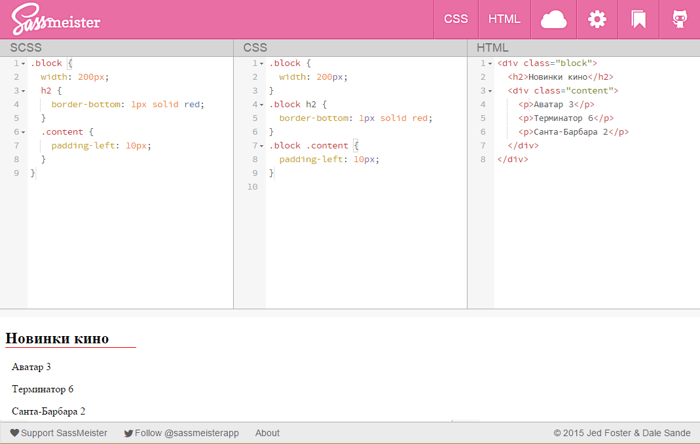
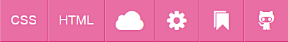
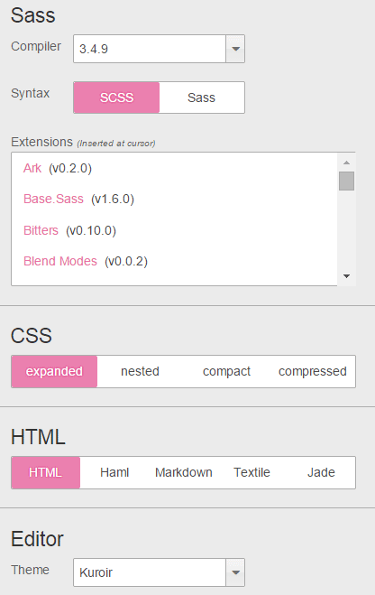

Сайт SassMeister
Одним из удобных онлайновых инструментов для редактирования Sass и получения на выходе готового CSS является сайт SassMeister, находящийся по следующему адресу.
Это целая площадка для набора текста и просмотра полученного результата в реальном времени. Поддерживается разный синтаксис, подсветка кода, множество расширений, выбор тем.

Вид сайта SassMeister
У сайта есть четыре основных панели — Sass, CSS, HTML и результаты. Редактировать можно только Sass и HTML. Код CSS получается автоматически из Sass и напрямую его править нельзя. В результате отображается итоговая веб-страница после применения стилей. Через верхнее меню можно выбирать показ панелей, оставляя только Sass или всё вместе.

Верхнее меню
В меню имеются такие пункты.
CSS — отключить панель CSS. Это лучше делать при наборе команд Sass и экспериментах с кодом. При включенной панели компиляция происходит после любого чиха, что приводит к частому появлению ошибок.
HTML — отключить панель HTML. Если у вас нет кода HTML и вы работает только со стилем, то эту панель желательно отключить, чтобы не занимала место.
Облако — после входа на GitHub вы можете через этот пункт меню сохранять свой код и очищать все панели. Заметим, что последний набранный код сохраняется в браузере автоматически и без регистрации на GitHub.
Настройки — через это меню можно выбрать синтаксис, добавить внешнюю библиотеку, установить стиль форматирования, выбрать тему и др.
Закладка — позволяет простым перетаскиванием добавить сайт в закладки браузера.
GitHub — вход на GitHub.
В настройках подключаются дополнительные библиотеки расширяющие функционал кода и выбирается способ форматирования получающегося CSS. Имеются такие варианты.
- expanded (расширенный) — традиционный вывод стилевых правил, все селекторы равнозначны и выводятся в едином виде.
- nested (с вложениями) — правила с вложенными селекторами сдвигаются вправо относительно родительского селектора.
- compact (компактный) — каждый селектор выводится на отдельной строке, все стилевые правила объединяются в одну строку.
- compressed (сжатый) — все стилевые правила объединяются в единственную строку.

Настройки
Если залогиниться через GitHub, то результаты сохраняются на сайте gist.github.com при нажатии на облачко.

Все материалы сайта доступны по лицензии Creative Commons «Attribution-NonCommercial» («Атрибуция — Некоммерческое использование») 4.0 Всемирная, если не указано иное.